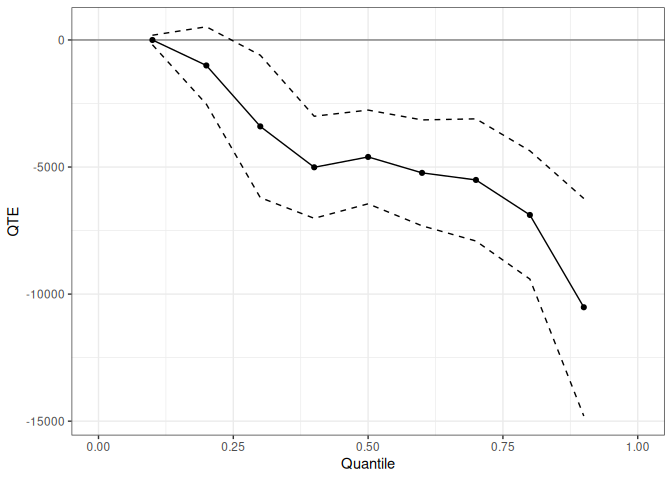
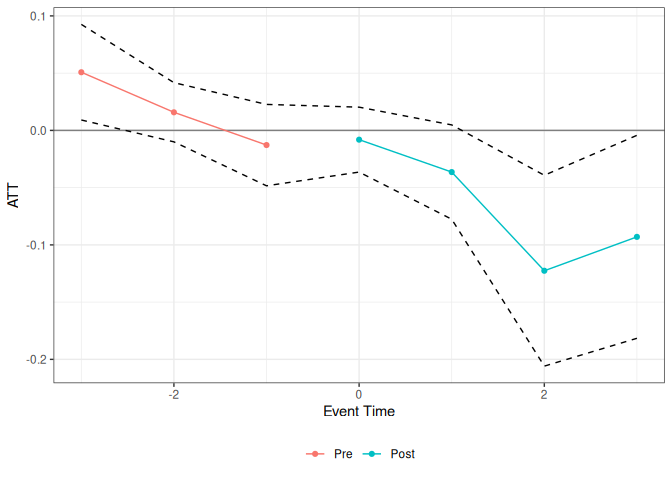
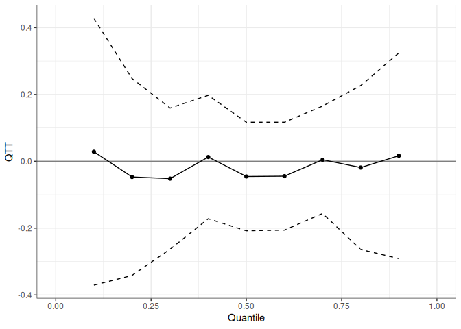

Overview
The qte package provides methods for estimating Quantile Treatment Effects (QTE) and Quantile Treatment Effects on the Treated (QTT) in R. Where the average treatment effect summarizes the impact of a policy by a single number, the QTE describes how treatment effects vary across the outcome distribution — useful whenever the policy’s impact is heterogeneous or when distributional consequences (e.g., for inequality) are of interest.
Cross-sectional estimators (no panel data required):
-
unc_qte()— QTE/QTT under unconfoundedness (IPW, outcome regression, or doubly robust); covers random assignment as a special case
Panel and repeated cross-section estimators (staggered treatment adoption supported for all):
-
cic()— Change in Changes (Athey and Imbens 2006) -
qdid()— Quantile Difference-in-Differences (Athey and Imbens 2006; Meyer, Viscusi, and Durbin 1995) -
panel_qtt()— Panel QTT via copula stability (Callaway and Li 2019) -
ddid()— Distributional Difference-in-Differences (Callaway and Li -
mdid()— Mean Difference-in-Differences (Thuysbaert 2007) -
lou_qtt()— Lagged-outcome unconfoundedness QTT
Installation
# Install from CRAN:
install.packages("qte")
# Install the development version from GitHub:
# install.packages("remotes")
remotes::install_github("bcallaway11/qte")Quick start — unconfoundedness
The unc_qte() function estimates the QTE or QTT under an unconfoundedness assumption. Here we use the observational Lalonde (1986) data to estimate the QTT of a job training program, controlling for pre-treatment characteristics via doubly robust estimation.
data(lalonde)
xf <- ~ age + I(age^2) + education + black + hispanic + married + nodegree
res_cs <- unc_qte(
yname = "re78",
dname = "treat",
data = lalonde.psid,
xformla = xf,
est_method = "aipw",
target = "qtt",
probs = seq(0.1, 0.9, 0.1),
biters = 100
)
summary(res_cs)
#>
#> Overall ATT:
#> ATT Std. Error [ 95% Conf. Int.]
#> -4685.583 748.226 -6152.079 -3219.087 *
#>
#>
#> QTT:
#> Tau QTT Std. Error [ 95% Simult. Conf. Band]
#> 0.1 0.0001 95.2199 -186.6276 186.6277
#> 0.2 -1002.7420 776.9108 -2525.4592 519.9752
#> 0.3 -3400.5673 1429.5969 -6202.5258 -598.6089 *
#> 0.4 -5009.2491 1024.5269 -7017.2849 -3001.2132 *
#> 0.5 -4602.4652 940.8123 -6446.4235 -2758.5069 *
#> 0.6 -5229.1454 1063.0822 -7312.7482 -3145.5426 *
#> 0.7 -5507.4720 1226.5376 -7911.4415 -3103.5024 *
#> 0.8 -6885.7529 1287.3819 -9408.9750 -4362.5308 *
#> 0.9 -10517.0625 2183.2832 -14796.2190 -6237.9060 *
#> ---
#> Signif. codes: `*' confidence band does not cover 0Plot the QTT curve with a uniform confidence band:
autoplot(res_cs)
Staggered treatment adoption
All panel estimators use a common yname/gname/tname/idname interface and support staggered treatment adoption via ptetools. The example below uses the mpdta dataset (county-level employment, from the did package) with the Change in Changes estimator.
data(mpdta, package = "did")
res_att <- cic(
yname = "lemp",
gname = "first.treat",
tname = "year",
idname = "countyreal",
data = mpdta,
gt_type = "att",
biters = 100
)
summary(res_att)
#>
#> Overall ATT:
#> ATT Std. Error [ 95% Conf. Int.]
#> -0.0197 0.0149 -0.0492 0.0099
#>
#>
#> Dynamic Effects:
#> Event Time Estimate Std. Error [95% Simult. Conf. Band]
#> -3 0.0508 0.0213 0.0091 0.0926 *
#> -2 0.0158 0.0132 -0.0100 0.0417
#> -1 -0.0128 0.0181 -0.0484 0.0227
#> 0 -0.0081 0.0145 -0.0364 0.0203
#> 1 -0.0364 0.0210 -0.0776 0.0048
#> 2 -0.1226 0.0425 -0.2059 -0.0392 *
#> 3 -0.0930 0.0452 -0.1816 -0.0043 *
#> ---
#> Signif. codes: `*' confidence band does not cover 0Event-study plot showing pre-trends and post-treatment ATT by event time:
autoplot(res_att, type = "dynamic")
The same estimator returns a full QTT curve when gt_type = "qtt":
res_qtt <- cic(
yname = "lemp",
gname = "first.treat",
tname = "year",
idname = "countyreal",
data = mpdta,
gt_type = "qtt",
probs = seq(0.1, 0.9, 0.1),
biters = 100
)
autoplot(res_qtt)
Available estimators
| Function | Method | Target | Panel required |
|---|---|---|---|
unc_qte() |
Unconfoundedness (IPW / OR / AIPW) | QTE or QTT | No |
cic() |
Change in Changes | ATT or QTT | Optional |
qdid() |
Quantile DiD | ATT or QTT | Optional |
panel_qtt() |
Panel QTT (copula stability) | QTT | Yes |
ddid() |
Distributional DiD | ATT or QTT | Yes |
mdid() |
Mean DiD | ATT or QTT | Optional |
lou_qtt() |
Lagged-outcome unconfoundedness | ATT or QTT | Yes |
All panel estimators support staggered treatment adoption and return group-specific, event-study, and overall aggregations.
Documentation and vignettes
Full documentation and vignettes are available at the pkgdown site:
-
Quantile Treatment Effects in R —
unc_qte()under random assignment and selection on observables - Panel Data Estimators for Quantile Treatment Effects — identification assumptions and usage for all six panel estimators
-
Staggered Treatment Adoption — applied workflow with
mpdta: QTT curves, event-study plots, and cross-estimator comparison